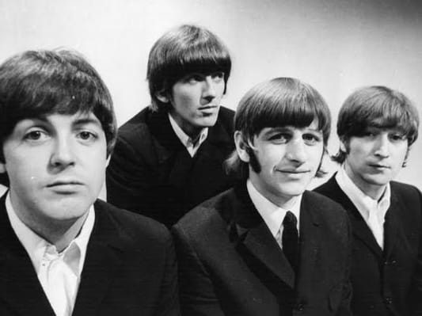
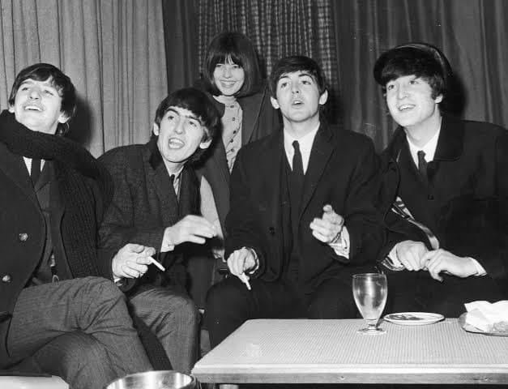
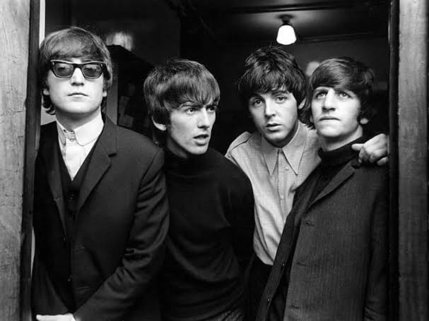
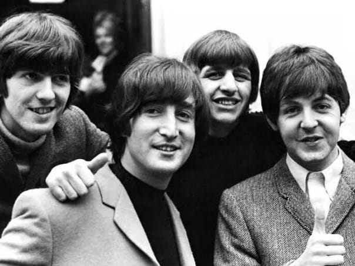
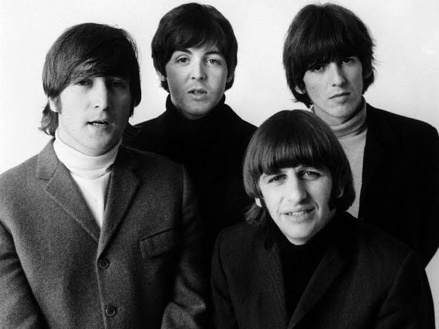

A Banda
The Beatles foi uma banda de rock, formada na cidade de Liverpool (Inglaterra), em 1956. Faziam parte deste grupo os seguintes músicos: John Lennon (vocalista, guitarrista e compositor), George Harrison (guitarrista e vocalista), Paul Mc Cartney (baixista, compositor e vocal) e Ringo Star (baterista). O nome inicial da banda era Silver Beetles, fazendo uma referência a besouros. Porém, por sugestão de John Lennon, a banda passou a se chamar The Beatles, pois a palavra inglesa "beat" significa ritmo ou batida.
As músicas dos Beatles e de John Lennon fazem grande sucesso até os dias de hoje, sendo ouvidas por jovens e adultos.
O Sucesso da banda
Fizeram sucesso mundial com suas músicas, principalmente na década de 1960. O sucesso deve-se ao estilo revolucionário que implantaram no cenário musical. Eram canções com letras marcantes e efeitos de guitarra fortes. As letras atingiram em cheio os jovens, pois eram contestadoras e revolucionárias para a época. O estilo visual também revolucionou o cenário musical. Os jovens de Liverpool usavam cabelos compridos, roupas de cores fortes, anéis e outros adereços. O sucesso foi tão grande que no ano de 1965 foram recebidos pela rainha Elizabeth II, da Inglaterra, e receberam medalhas da Ordem do Império Britânico. Da música foram para o cinema e, em 1967, lançaram o filme “Help!”. A beatlemania espalhou-se pelo mundo inteiro, fazendo sucesso inclusive no Brasil. Produziram também outros filmes: A Hard day’s night e Magical Mistery Tour.O Início da crise
A banda começou a entrar em crise, em função de divergências empresariais, no final dos anos 60, terminando em 1970. John Lennon seguiu carreira solo, com participação de sua esposa Yoko Ono. Porém, em dezembro de 1980, foi assassinado por um fã, ao entrar em seu prédio na cidade de Nova Iorque. Morria um dos maiores músicos de todos os tempos.Band Members


 John lennon
John lennon


 Paul McCartney
Paul McCartney


 George Harrison
George Harrison


 Ringo Starr
Ringo Starr
CONTATO
Minas Gerais, BRTelefone: +55 31 98901-8696
Email: emilly.fernads@gmail.com
Fan? Deixe um comentário!
Powered by w3.css